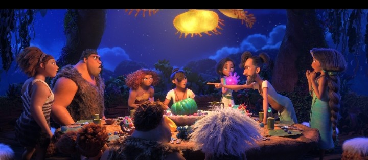

Grug and Phil have similar role because both are fatherss who want to protect thier families. however, they have very different ideas about how to do it.

Grug believe survival comes from being strong, careful and staying together. Phil believes that intelligence, planning, intentions and a more developed lifestyle are better.
Thier competition crreats tesion. neither father wants to that other person may have useful ideas.
Eventually, the story shows that neither family has all the answers. The Croods learn from the Bettermans, while the bettermans can also learn from the croods.